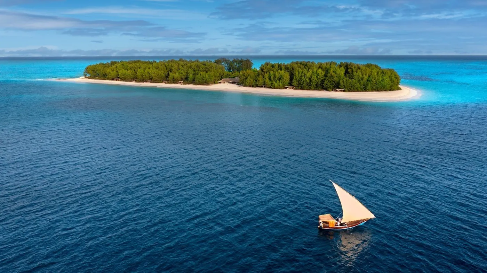
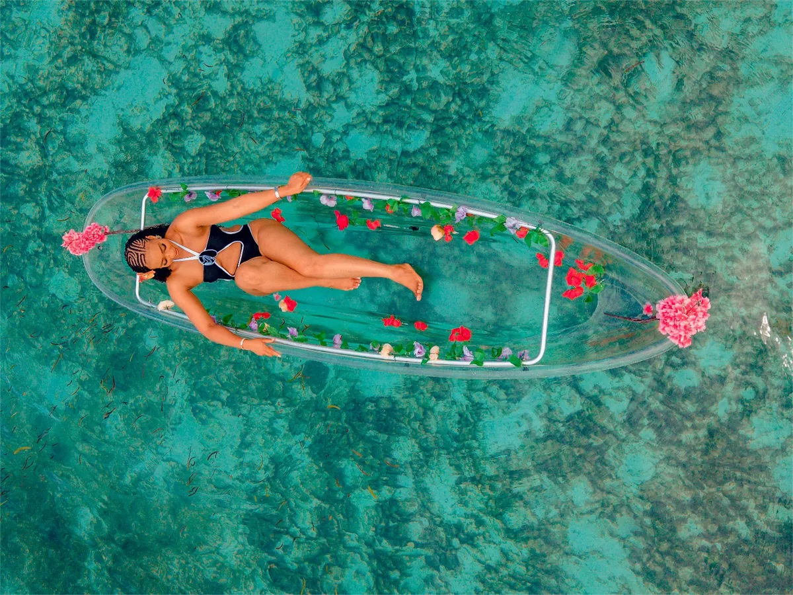
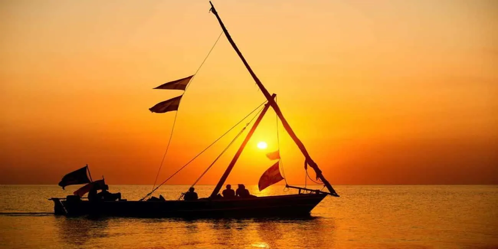
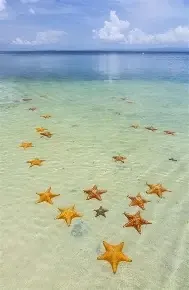
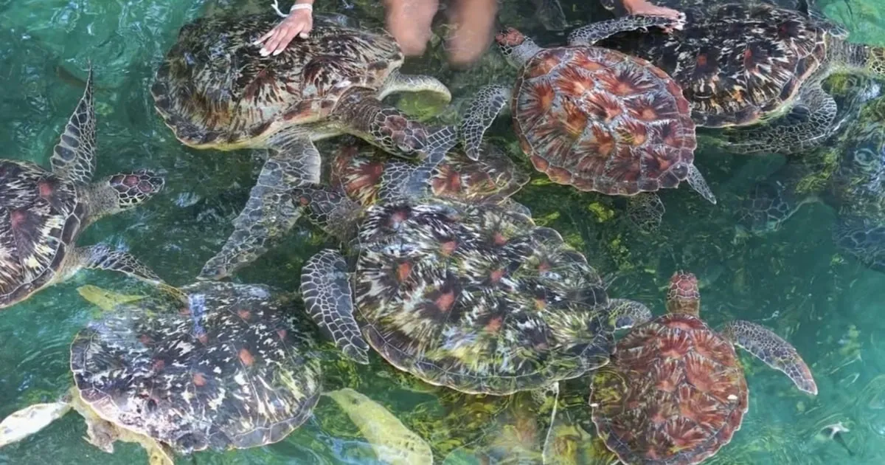
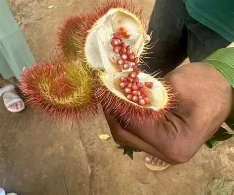
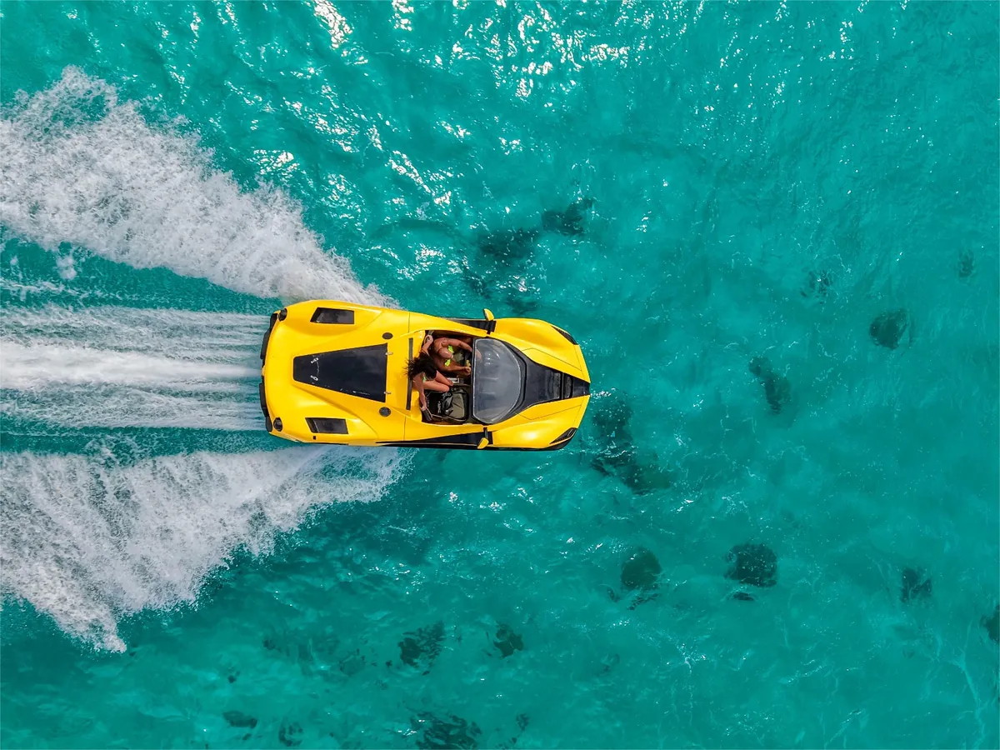
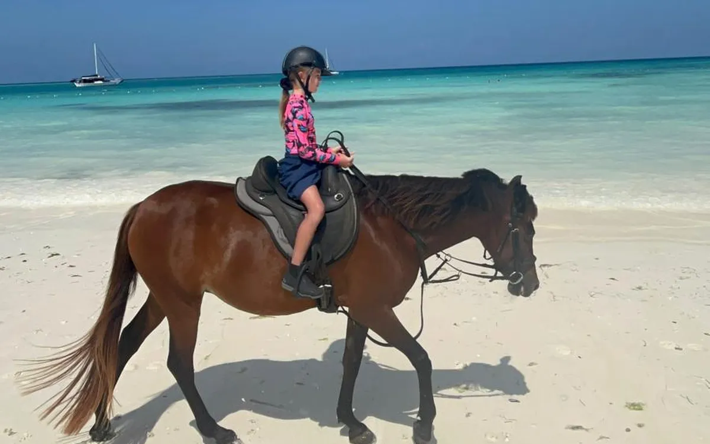

Snorkeling przy Mnemba i delfiny
Krystalicznie czysta woda, kolorowe ryby i rafy wokół Mnemba. Delfiny widujemy zależnie od dnia. Najlepsza pora zależy od pływów.
Lokalny kapitan • Sprzęt bezpieczeństwa • Odbiór z hotelu na życzenie
Snorkeling przy Mnemba, żółwie morskie, piaszczysta mielizna i rejs o zachodzie słońca — z prawdziwym lokalnym kapitanem. Rezerwuj bezpośrednio na WhatsApp.
Napisz datę i hotel — dostępność potwierdzimy na WhatsApp.



Trzy proste kroki — bez agencji i pośredników.
Wybierz wycieczkę poniżej lub poproś o plan na miarę.
Data, hotel, liczba osób — formularz otworzy WhatsApp z gotową wiadomością.
Kapitan Busara odpisze z ceną, godziną startu (zależnie od pływów) i miejscem spotkania.
Lokalne, autentyczne doświadczenie Zanzibaru — rezerwujesz bezpośrednio u kapitana.
Kapitan Busara mieszka na plaży Kendwa i doskonale zna te wody — pływy, ukryte miejsca do snorkelingu i najlepszą porę na złoty zachód słońca.
Bez agencji i bez pośredników. Po prostu przyjazny lokalny kapitan, świetna łódź i idealny dzień na Zanzibarze.
Wybierz gotową wycieczkę lub napisz, a zaplanujemy dzień na miarę.

Krystalicznie czysta woda, kolorowe ryby i rafy wokół Mnemba. Delfiny widujemy zależnie od dnia. Najlepsza pora zależy od pływów.

Spacer boso po jasnej mieliźnie otoczonej turkusową wodą — klasyczny przystanek na zdjęcia na Zanzibarze. Godzina zależy od pływów.

Odkryj inne oblicze Zanzibaru w płytkiej, turkusowej wodzie. Zapytaj Busarę o wizytę na mieliźnie i możliwość obserwowania rozgwiazd w ich naturalnym otoczeniu. Prosimy: patrzymy, nie wyciągamy — rozgwiazdy zostają w wodzie.

Poznaj żółwie morskie i dowiedz się o nich więcej. Świetne dla rodzin z dziećmi.
Złota godzina na oceanie — idealna dla par, urodzin i relaksu.

Zamień plażę na zielone oblicze Zanzibaru. Odkryj leśne krajobrazy, kładki wśród namorzynów i gerezy rude.

Poznaj Zanzibar poza plażą. Odkryj kolory i aromaty plantacji przypraw oraz rośliny, z których pochodzą dobrze znane smaki.

Odkryj wąskie uliczki, rzeźbione drzwi i codzienne życie Stone Town. Zapytaj Busarę o spacer po tej pełnej charakteru części Zanzibaru.
Turkusowa woda, przezroczysty kajak i nowe spojrzenie na wakacje na Zanzibarze. Zapytaj Busarę o sesję zdjęciową w kajaku w wybranym terminie.

Przenieś swoją przygodę na Zanzibarze na wodę w łodzi przypominającej samochód. Zapytaj Busarę o dostępność i warianty atrakcji dla Twojej grupy.

Przejażdżka konna po plaży (atrakcja partnerska). Pomagamy zorganizować transport i termin.
Podaj lokalizację hotelu i co chcesz zobaczyć. Ułożymy najlepszą trasę zależnie od pływów i warunków.
* Każdą wycieczkę wyceniamy indywidualnie — skontaktuj się z nami, a dopasujemy ofertę do Twoich potrzeb i oczekiwań.
Uzupełnij szczegóły — WhatsApp otworzy się z gotową wiadomością.
Wody, mielizny i szlaki Zanzibaru.
Krótka opinia w Google pomaga innym podróżnym w wyborze i wspiera mały lokalny biznes.
Najczęstsze pytania od turystów.
Plaża Kendwa, Zanzibar — łatwe miejsce spotkania. Napisz nam na WhatsApp nazwę hotelu.
Plaża Kendwa
Współrzędne: -5.750387916694523, 39.28784786172583
Najszybciej przez WhatsApp. Wyślij: datę, hotel, liczbę osób i wybraną wycieczkę.